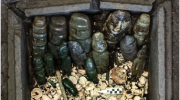
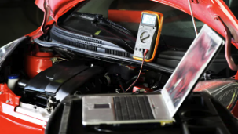
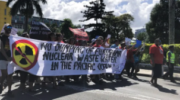

La última ofrenda hallada en el Templo Mayor: un cofre de piedra repleto de tesoros marinos y 15 esculturas antropomorfas
Se trata de cofre de piedra con 15 esculturas antropomorfas y numerosas cuentas de piedra verde, caracoles, conchas y corales marinos, el cual data del reinado de Moctezuma Ilhuicamina (1440-1469 d.C.).
Cómo enviar videos HD desde WhatsApp
Los usuarios de la aplicación de mensajería instantánea podrán enviar videos con una resolución de hasta 720p, con un peso cercano a 60 MB.

EE UU cambia de opinión, apoya el derecho a reparar autos
El Gobierno de Biden ahora respalda una ley de Massachusetts que permite a mecánicos y propietarios de autos el acceso a mayor información de diagnóstico que favorezca las reparaciones independientes o por su cuenta.

Comienza el vertido de las aguas de Fukushima en medio de opiniones encontradas
El vertido al Pacífico de las aguas contaminadas por el desastre nuclear de Fukushima obtuvo la aprobación del Organismo Internacional de Energía Atómica. Países cercanos y ambientalistas se oponen a la polémica medida.
La foto de la ficha policial de Donald Trump esta vez es de verdad
La primera foto de fichaje policial de un presidente estadounidense es real. En un mundo de falsificaciones, la foto de Trump es importante, y pasará a la historia.